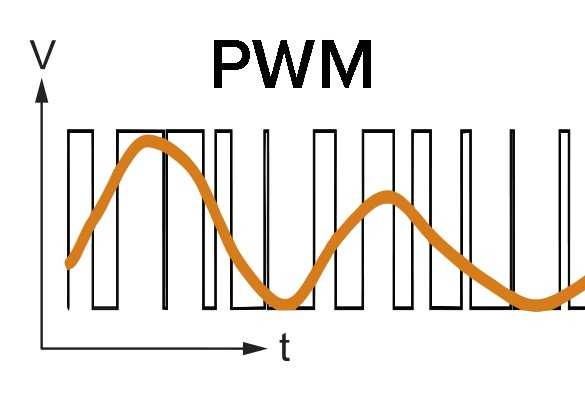

El diferents microcontroladors tenen en comú el seguents aspectes
PWM significa modulació de l'ample de banda en angles: Pulse with Modulation i es una forma d'aconseguir una sortida analògica a partir de diverses sortides digitals molt rapides
PWM es representa amb el simbol "~" tal com podem veure a la imatge d'un arduino uno

Els pins amb PWM en l'arduino uno son el següents: 3,5,6,9,10 i 11. que son sortides analogiques de 8 bits. Com diu a les especificacions del fabricant
Mentres, que en el cas del arduino rev4 usa 12 bits. Anomenat pel fabricant com a DAC (DIGITAL ANALOG CONVERTER)
Tenir 8 o 12 bits en un convertidor DAC tipus PWM fa que tinguem 28 o 210 nivells differents de corrent, es a dir 256 nivells diferents o 2048 nivells diferents
Suposem que arduino uno (Tan com si es Rev3 o Rev4) poden donar 5 volts com a maxim. Quina seria la resolució en milivolts de cada arduino?
per al rev3 es 5 dividit entre 256 = 0.0195 = 19,5 milivolts (Per arduino uno revisió 3)
per al rev4 es 5 dividit entre 2048 = 0.00244 = 2,44 milivolts (Per arduino uno revisió 4)
els milivolts anteriors son la resolució que tenen. imaginem que volem regular la intensitat de un led arduino Uno Rev3 aconseguim mensys fluidesa i amb graons mes grans, es a dir canvis mes bruscos perque 256 canvis son molt menys que 2048 canvis. A continuació veurem una imatge que representa com combinant moltes senyals digitals es fa una senyal analogica. Aixó es el principi del PWM
quan major es l'amplada del pols, vol dir que major es el temps en la que la sortida digital esta en alt voltatge (5 volts o 3,3 volts) i menys temps esta a 0 volts. I per tant la media de tot els polsos es més alt. Si cada pols es més estret, vol dir que estara més temps en voltatge baix (0 volts). A la imatge de dalt es pot veure com la senyal analogica canvia amb els polsos de senyal digital (En els punts on els polsos coincideixen la senyal analogica es potencia, i en els punts on no hi ha polsos la senyal analogica baixa.
a la taula, a continuació veuras els valors per defecte de la frequencia PWM en arduino UNO
| Pin de sortida th frequencia. | PINS: 3 , 9, 10 , 11 | td td |
|---|